When the report panel is opened in the lower part of the screen, the user may choose any of the following options:
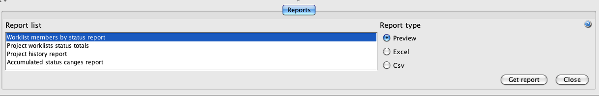
The user must choose an item from the report list and click “Preview” button to select a project in order to visualize the report:
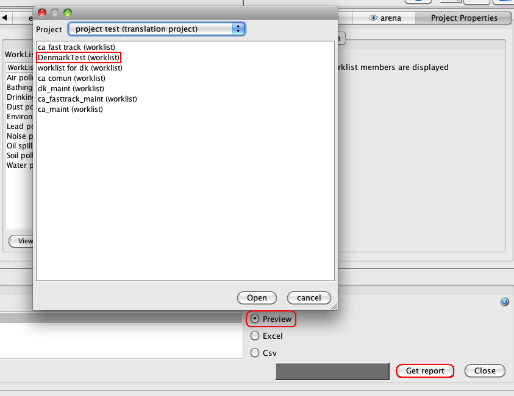
The available worklists are displayed. A printable viewer is displayed showing the worklist members by status, specifying source FSN and target PT (provided a translated one exists), and showing totals for each status.
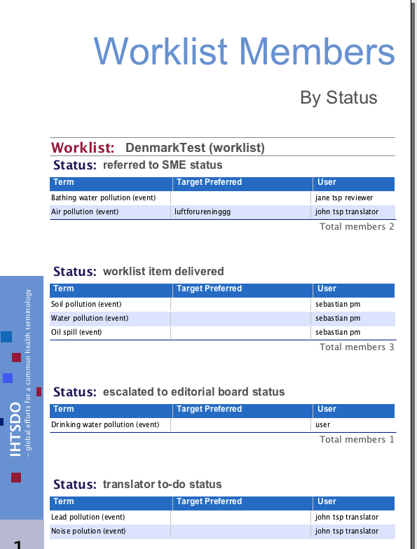
A pie chart view with a summary of all the workflow’s statuses and of the last user is also displyed:
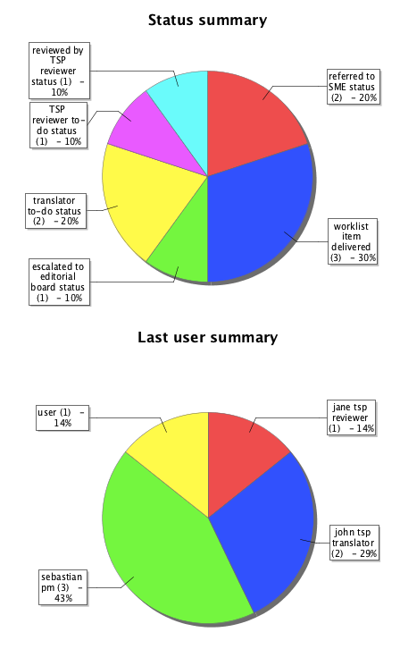
When the Excel format is chosen, the report will be displayed in an excel pivot table that shows a Report Demo sheet listing Status, Worrklist chosen and Total numbers of each status.
If data have changed since the last time the worklist was selected, press the refresh icon to update them.
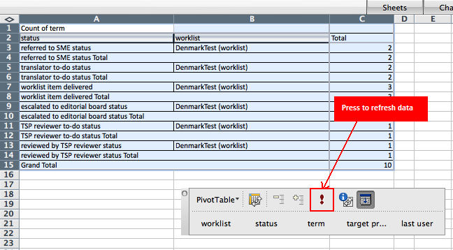
The other sheet of the Excel pivot table contains data displayed by status, term (either source FSN and target preferred term), as well as the last user involved in the translation:
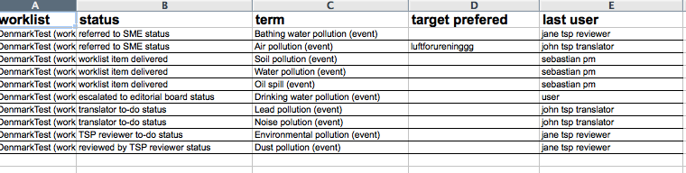
Clicking “CSV data” button will save a CSV (comma-separated values) file, a simple text format for a database table, wherever the user indicates.
The following option summarizes the statuses of all the worklists in a given project:
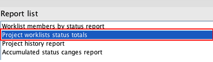
All the project worklists are displayed, either as tables and as bar graphs, as well as a workset summary and a project summary. Each of them displays the statuses of all the worklists:
A: Examples of worklist status totals:
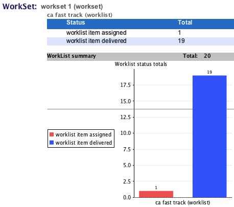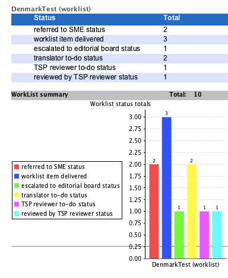
B: Example of Workset summary:
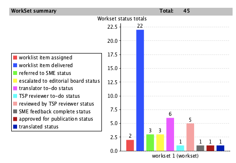
C: Example of Project summary:
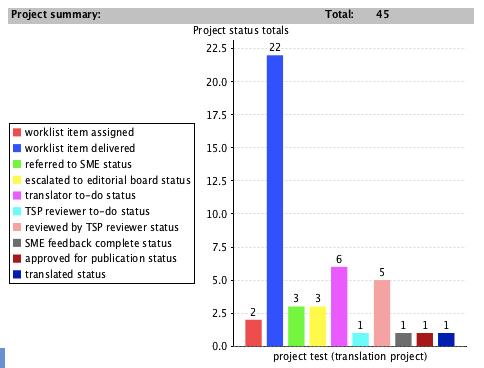
As with the "Worklist members by status report", the same information may be presented in an Excel pivot table and in csv format.
The third option for reporting is the Project History Report:
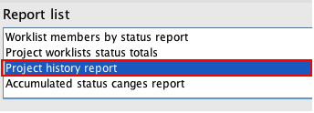
In this case, a project must be selected, and then a start date and an end date should de specified. The interval (days) indicates how often data are recorded.

When the parameters have been defined an Excel table is opened showing the project in the specified period, with the data obtained at the specified interval and the respective changes.
Finally, the last option for reporting is the "Accumulated status changes report", which displays the number of translation statuses per user and per date, for a given worklist, workset and project. The information is displayed in an Excel pivot table containing the pivot table proper (A) and the data sheet (B)
(A) 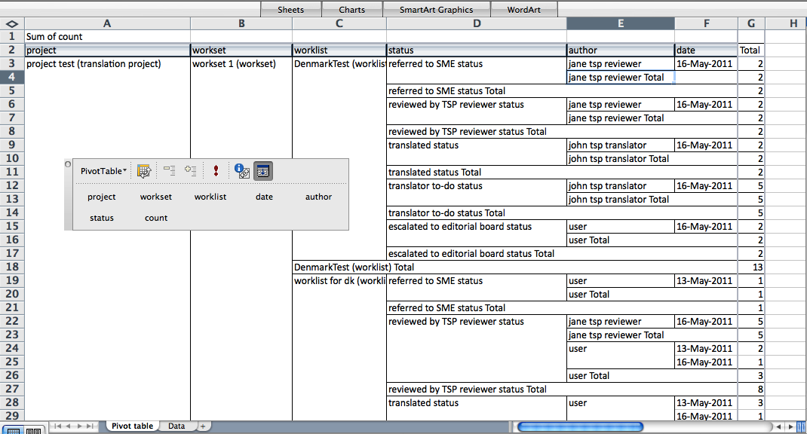
(B) 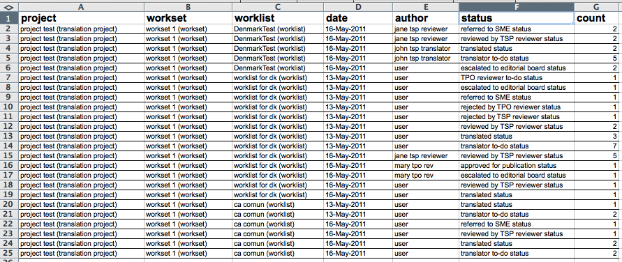